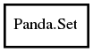

Panda.Set Reference Manual
Packages
pandaseq-2
Panda
Set
Set
add
add_str
contains
ref
unref
Set
Object Hierarchy:

Description:
public
class
Set
A set of sequence identifiers against which to match.
Namespace:
Panda
Package:
pandaseq-2
Content:
Creation methods:
public
Set
()
Create a new, empty set.
Methods:
public
void
add
(
identifier
id)
Add a sequence identifier to a set.
public
bool
add_str
(
string
id,
Tagging
policy =
OPTIONAL
,
out
IdFormat
detected_format =
null
,
out
string
end =
null
)
Parse a sequence identifier and add it to the set.
public
bool
contains
(
identifier
id)
Check if a sequence identifier has been added to the set.
public
weak
Set
ref
()
Increase the reference count on a set.
public
void
unref
()
Decrease the reference count on a set.